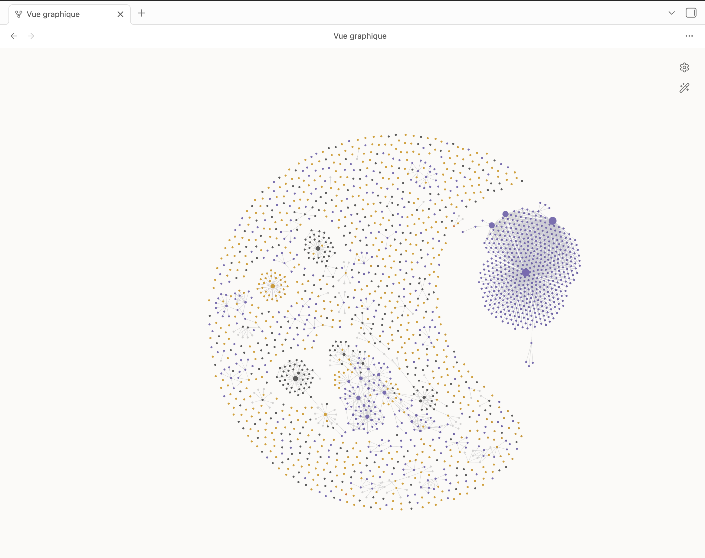

Second brain и слой памяти уже работают. Jarvis-агент запущен и в активной разработке.

Заметки, транскрипты и документы связаны в граф вручную и ссылками. Это фундамент, поверх которого работает вся память.
Vault нарезан на фрагменты и векторизован локально — модель находит нужное, даже если формулировка совсем другая. Ноль внешних API.
Запущен и крутится 24/7. Механика собрана — сейчас довожу качество диалога и роутинг.
Агент сам вызывает инструменты: ищет, ставит встречи, создаёт заметки и задачи, делегирует фоновые задачи. Необратимое — через «да».
Пример: «посмотри календарь и поставь встречу после последней» — отрабатывает в один заход.
Фундамент готов и работает. Агентный слой — довожу до ума.